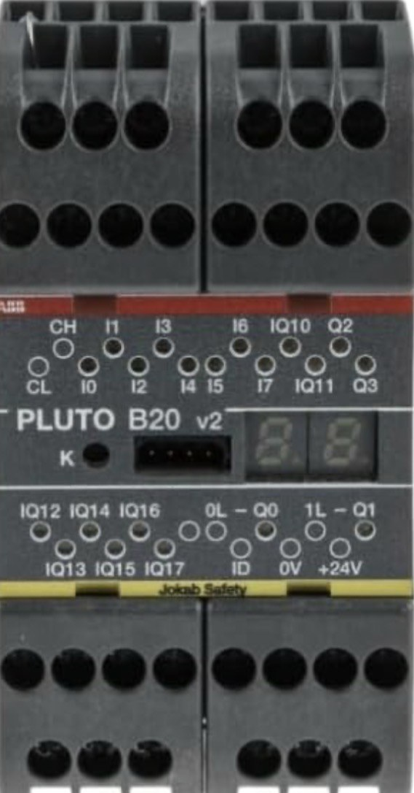

السيفتي PLC · الدرس 6 من 9
الـ Pluto B20 سيفتي PLC صغير فيه 20 طرف دخل وخرج، واسمه «20» من عدد هذه الأطراف. وله نسختان: B20 يتواصل مع وحدات Pluto أخرى على الباص، وS20 يعمل منفردًا دون باص.

بجوار كل طرف مصباح يضيء عند تشغيله. وQ0 وQ1 تلامس جاف: يمر عليه 24V أو 230V.
لكل مجموعة أطراف وظيفة:
الشاشة من رقمين، وتعرض حالة الجهاز:
زر K يعمل ريست لأعطال مثل Er40 وEr15، ويحمّل البرنامج من الـ IDFIX.
داخل الـ Pluto بروسيسوران A وB. كل منهما يقرأ الدخل ويشغّل الخرج منفردًا، ثم يقارنان.
إذا اختلفا ظهر Er50 وفصلت كل المخارج. وغالبًا يكون السبب حساسًا يُخرج إشارة متذبذبة.
وتذكّر أنواع الأطراف: I دخل أمان فقط. وIQ دخل أو خرج. وQ0 وQ1 ريلاي أمان. وQ2 وQ3 ترانزستور أمان.
أجب إجابة صحيحة عن 5 من 6 على الأقل ليُسجَّل الدرس مكتملًا.
الأرقام والأطراف هنا من كتالوجات ABB (Pluto Hardware Manual وProgramming Manual وRT9). قبل التطبيق على ماكينة حقيقية ارجع إلى الكتالوج وتقييم المخاطر الخاص بالماكينة. يُحفظ تقدّمك على هذا الجهاز فقط.
© LearnElectricals